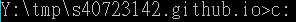
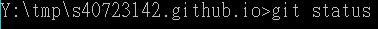
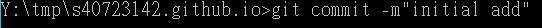

簡介
2018 Fall 計算機程式與電腦輔助設計實習課程分組網站
啟動用程式 p37指令說明
p37指令說明
cd=到某某位址

cls=清理

c:切換

cd \ 讓位址回到最初的點

git =執行每項指令的開頭語

clone=將網址上的檔案載到目前位址裡
更新四部曲>status>add .>commit>push
status=查看內容

add.=將更新內容存檔

commit=將更新內容提交
push=將更新內容推上去

CMSimfly 網站
各組必須自行更改 Config 中的網站標題, 且每次完成近端動態網頁編輯後, 以 generate_pages 按鈕, 將動態網頁資料轉為靜態網頁資料, 之後再新增、提交並推送到遠端倉儲.
Next >> reveal 投影片